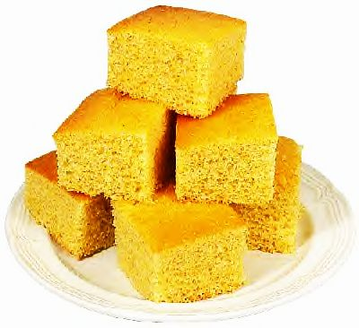

Sweet Corn Bread
This is my favorite corn bread recipe.
Ingredients
- ¾ C Sugar
- ½ C Salad Oil (Vegetable or Canola)
- 2 Eggs
- 1 ½ C Flour
- 3 tea. Baking Powder (1 tbsp)
- 1/8 tea Salt
- 1 ½ C Cornmeal
- 1 C Milk
Steps
- Preheat oven to 400 F
- Blend sugar and salad oil.
- Mix in eggs.
- Mix flour, baking powder, salt and corn meal together.
- Blend dry ingredients with the creamed mixture alternately with the milk.
- Poor into a greased, floured 9” sq. pan.
- Bake in a hot oven for 30 min. and a toothpick in center comes out clean.